Épreuve E5
Tableau de synthèse
Correspondance entre mes réalisations et les compétences du bloc 1 « Support et mise à disposition de services informatiques », classées comme dans le tableau officiel : en formation, puis en entreprise par année.
| Réalisation | Période | Gérer le patrimoine informatique | Répondre aux incidents et aux demandes | Développer la présence en ligne | Travailler en mode projet | Mettre à disposition un service informatique | Organiser son développement professionnel |
|---|---|---|---|---|---|---|---|
| Réalisations en cours de formation10 réalisations | |||||||
| A1Mini-SI : annuaire Active Directory et filtrage web par proxy (GPO, Squid)Documents : dossier technique, captures | 24/09/26 au 08/10/26 | Non | Non | Non | Non | ||
| A2Mini-SI : helpdesk GLPI relié à l'Active Directory en LDAPSDocuments : dossier technique, captures | 24/09/26 au 08/10/26 | Non | Non | Non | |||
| A3Mini-SI : supervision Zabbix et journaux centralisés (Grafana, Loki)Documents : dossier technique, captures | 24/09/26 au 08/10/26 | Non | Non | Non | Non | ||
| A4Mini-SI : sauvegarde chiffrée et restauration testée (restic, MinIO)Documents : dossier technique, captures | 24/09/26 au 08/10/26 | Non | Non | Non | Non | ||
| A5Infrastructure réseau d'une PME, en équipeDocuments : Gantt, plan réseau, compte rendu | depuis le 15/10/26 | Non | Non | Non | |||
| A6Déploiement d'un VPN avec authentification Active DirectoryDocuments : procédure, captures | 10/09/26 au 17/09/26 | Non | Non | Non | Non | ||
| A7Oghma : outil de gestion de projet en vibecodingDocuments : cahier des charges, prototype | depuis le 28/10/26 | Non | Non | Non | Non | ||
| A8Portfolio web : référencement et mentions légalesDocuments : site, page mentions légales | depuis le 01/04/26 | Non | Non | Non | Non | ||
| A9Profil LinkedInDocuments : profil | depuis le 09/11/26 | Non | Non | Non | Non | Non | |
| A10Veille : failles de sécurité 2025-2027Documents : page Veille du portfolio | depuis le 01/09/25 | Non | Non | Non | Non | Non | |
| En entreprise, première année7 réalisations | |||||||
| B1Support utilisateurs via GLPI et prise en main à distance de postes et de serveurs (MeshCentral, Guacamole)Documents : tickets anonymisés | 2025-2027 | Non | Non | Non | Non | ||
| B2Migration de domaine Active Directory (postes et utilisateurs)Documents : captures | 01/09/25 au 16/12/26 | Non | Non | Non | Non | ||
| B3Installation et enrôlement de postes Windows et LinuxDocuments : captures | 2025-2027 | Non | Non | Non | Non | ||
| B4Migration et conformité de l'antivirus EDR sur le siteDocuments : instruction de travail, captures | 2025-2027 | Non | Non | ||||
| B5Désinstallation des logiciels interdits par GPODocuments : script, GPO, journaux | 04/05/26 au 24/06/26 | Non | Non | Non | Non | ||
| B6Gestion, dépannage et configuration du matériel réseau (switchs, imprimantes)Documents : captures | 2025-2027 | Non | Non | Non | Non | ||
| B7Administration Microsoft 365 (Exchange, Intune) | 2025-2027 | Non | Non | Non | Non | Non | Non |
| En entreprise, seconde année6 réalisations | |||||||
| C1Accès Citrix sécurisé pour un client et script d'installation et de mise à jourDocuments : procédure, script, grille de test | 20/10/26 au 02/12/26 | Non | Non | ||||
| C2Bornes de pose de congés en libre-service et supervisionDocuments : procédure, scripts, journaux | 21/09/26 au 28/10/26 | Non | Non | ||||
| C3Diagnostic de lenteurs de téléchargement sur une ligne de productionDocuments : rapport d'analyse | 03/11/26 | Non | Non | Non | Non | ||
| C4Supervision, cartographie Zabbix et inventaire NetBoxDocuments : captures, rapport d'incident | 2025-2027 | Non | Non | Non | Non | ||
| C5Création d'un nouveau VLAN pour les imprimantes (plus d'adresses IP disponibles) | 14/09/26 au 16/09/26 | Non | Non | Non | |||
| C6Migration d'un serveur de fichiers vers SharePoint OnlineDocuments : captures | 04/01/27 au 10/02/27 | Non | Non | Non | |||
| Réalisations par compétence | 17 | 10 | 2 | 5 | 14 | 4 | |
Preuves, ligne par ligne
Chaque ligne du tableau a ici son numéro : dépliez-la pour l’explication et les captures.
Réalisations en cours de formation
A1Mini-SI : annuaire Active Directory et filtrage web par proxy (GPO, Squid)24/09/26 au 08/10/26
Pour une PME fictive, j'ai monté le domaine Active Directory avec son DNS et son autorité de certification, puis imposé un proxy Squid à tous les postes par GPO : la navigation est limitée au web et journalisée.
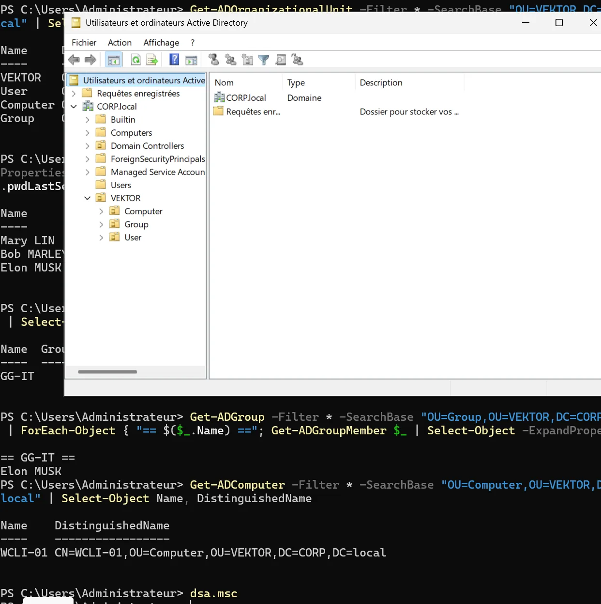
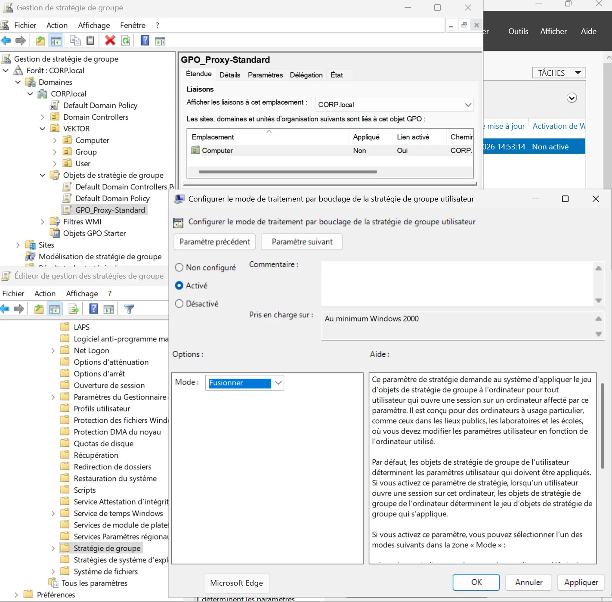
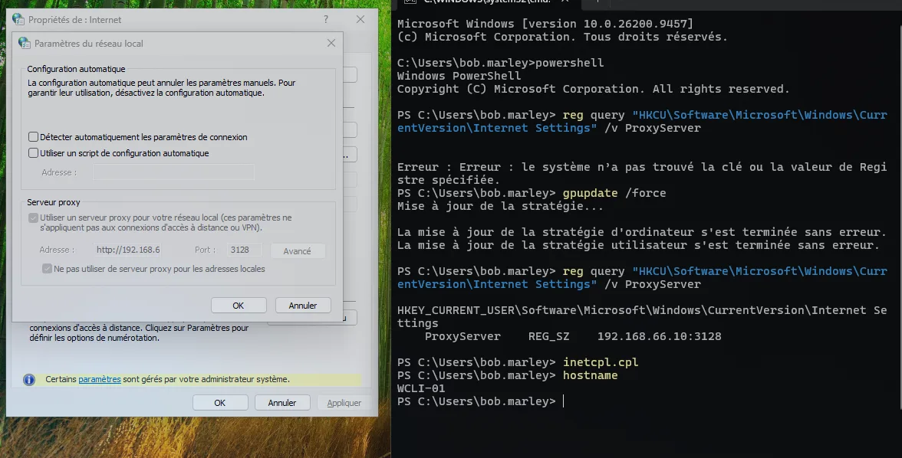
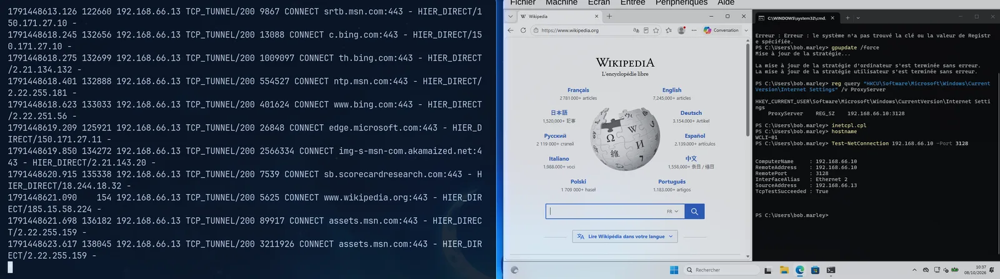
A2Mini-SI : helpdesk GLPI relié à l'Active Directory en LDAPS24/09/26 au 08/10/26
Les salariés ouvrent leurs tickets avec leur compte du domaine. GLPI interroge l'annuaire en LDAPS (chiffré) plutôt que d'affaiblir la sécurité du contrôleur de domaine. Les techniciens reçoivent leurs droits par un groupe, et quatre SLA fixent les délais.
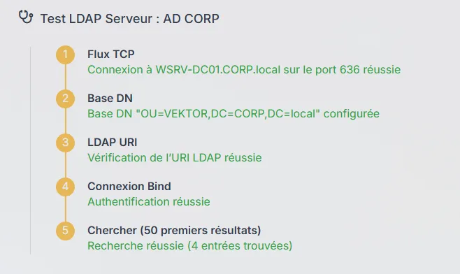
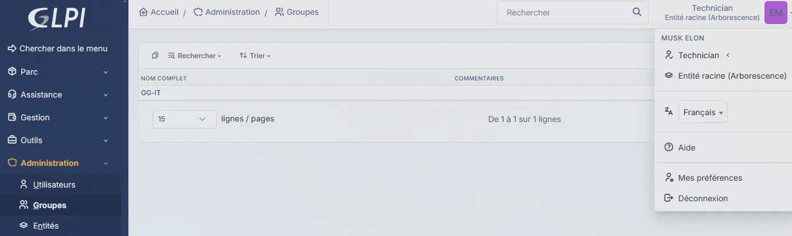
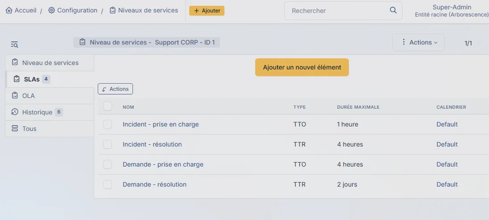
A3Mini-SI : supervision Zabbix et journaux centralisés (Grafana, Loki)24/09/26 au 08/10/26
Zabbix surveille les serveurs et alerte si un agent ne répond plus ou si la mémoire dépasse 85 % ; j'ai testé l'alerte en coupant un agent. Les journaux du système, des conteneurs et du proxy sont regroupés dans Grafana grâce à Loki.

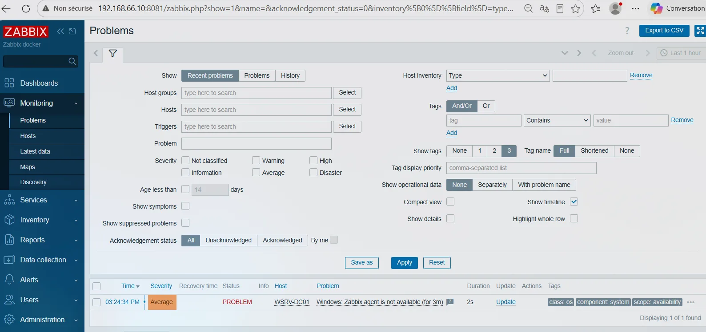
A4Mini-SI : sauvegarde chiffrée et restauration testée (restic, MinIO)24/09/26 au 08/10/26
Chaque nuit, les bases sont exportées puis sauvegardées et chiffrées par restic vers MinIO, avec 7 jours et 4 semaines de rétention. J'ai fait une vraie restauration : le service revient en 2 minutes environ, avec au plus 24 heures de données perdues.
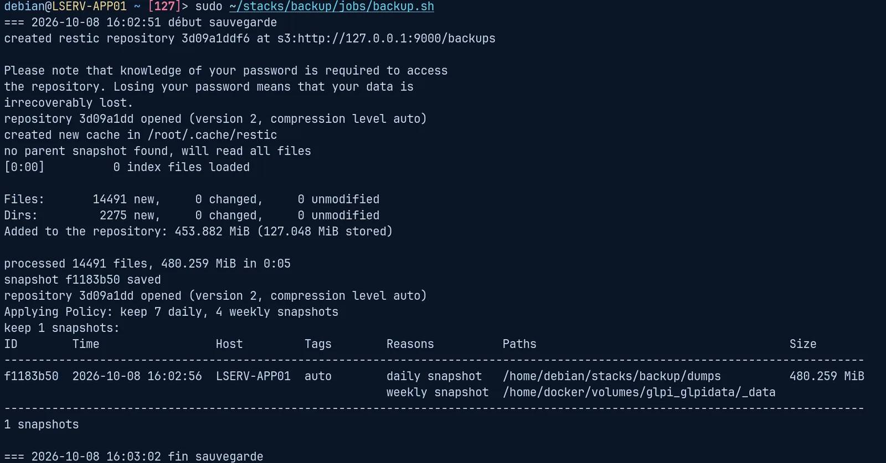
A5Infrastructure réseau d'une PME, en équipedepuis le 15/10/26
Projet à quatre dont je suis chef de projet : planning, répartition des tâches et dépôt commun. Côté technique : un VLAN par service, un pare-feu qui filtre entre les VLAN et une administration réservée au réseau d'administration.
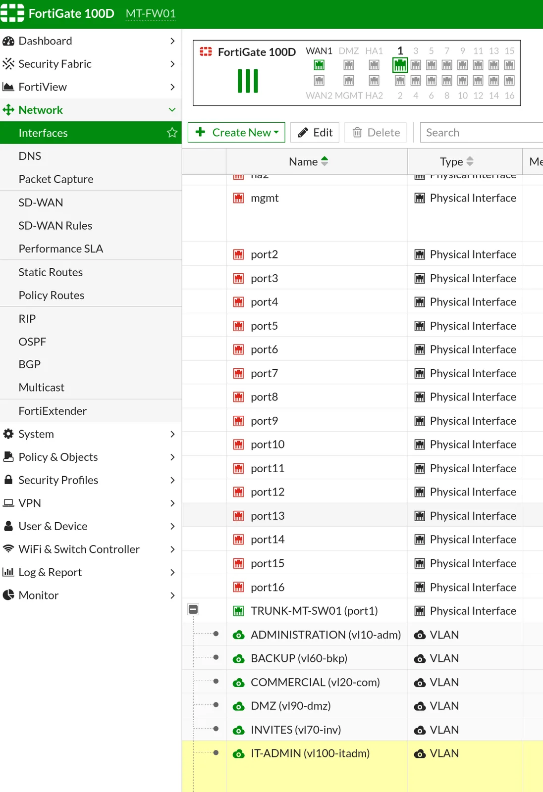
A6Déploiement d'un VPN avec authentification Active Directory10/09/26 au 17/09/26
Accès distant au réseau interne avec OpenVPN sur pfSense, réservé aux membres d'un groupe Active Directory : un membre est accepté, un non-membre refusé, et la connexion fonctionne aussi depuis un téléphone.
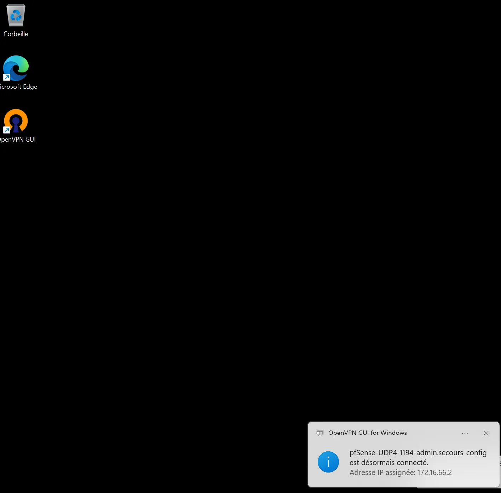
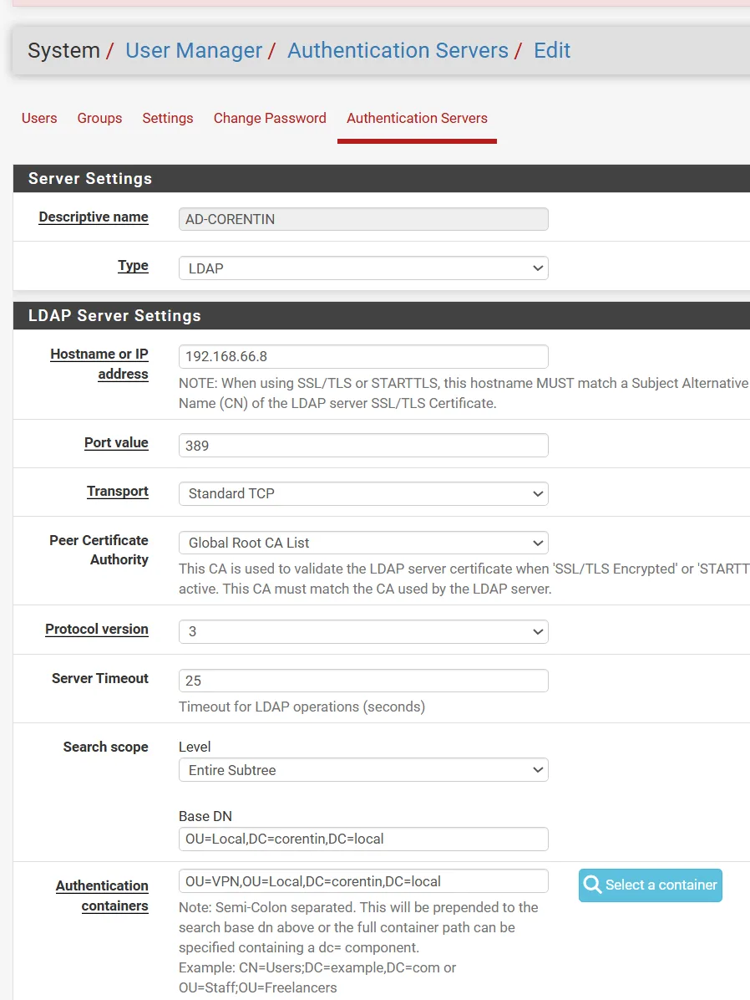
A7Oghma : outil de gestion de projet en vibecodingdepuis le 28/10/26
Outil personnel de gestion de projets dont le code est écrit par une IA, à partir de mes consignes. Mon rôle : rédiger le cahier des charges, tenir le registre des décisions et le journal, tester et valider chaque étape.
Captures en cours d'ajout
A8Portfolio web : référencement et mentions légalesdepuis le 01/04/26
Ce site : mentions légales et information sur les données personnelles, aucun cookie, balises pour les moteurs de recherche et les réseaux sociaux, plan du site. Il est hébergé sur GitHub Pages.
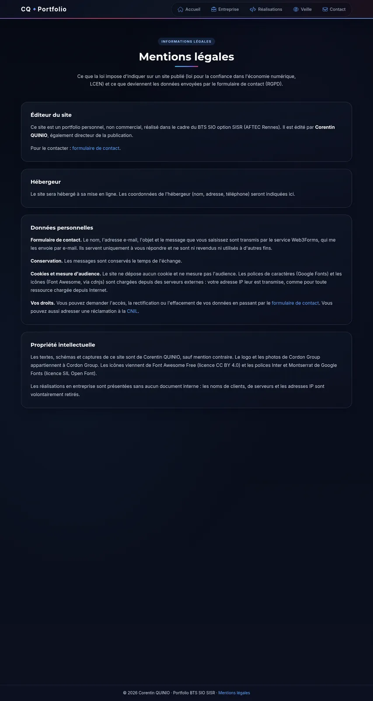
A9Profil LinkedIndepuis le 09/11/26
Profil professionnel pour gérer mon identité en ligne et relayer ce portfolio.
Captures en cours d'ajout
A10Veille : failles de sécurité 2025-2027depuis le 01/09/25
Suivi des failles de sécurité majeures depuis 2025, à partir du CERT-FR et du catalogue de la CISA, et de ce qu'elles changent pour mon travail.
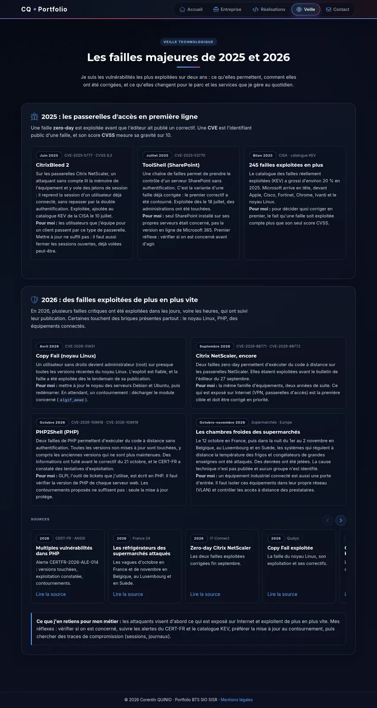
En entreprise, première année
B1Support utilisateurs via GLPI et prise en main à distance de postes et de serveurs (MeshCentral, Guacamole)2025-2027
Je traite les incidents et les demandes des utilisateurs dans GLPI, et j'interviens à distance sur les postes et les serveurs avec MeshCentral et Guacamole.
Captures en cours d'ajout
B2Migration de domaine Active Directory (postes et utilisateurs)01/09/25 au 16/12/26
Passage des utilisateurs et des postes de l'ancienne forêt Active Directory vers la nouvelle, avec la synchronisation du compte Microsoft 365 et l'enrôlement du poste.
Captures en cours d'ajout
B3Installation et enrôlement de postes Windows et Linux2025-2027
Préparation et installation des postes Windows et Linux, notamment pour les nouveaux arrivants, puis enrôlement dans la gestion du parc.
Captures en cours d'ajout
B4Migration et conformité de l'antivirus EDR sur le site2025-2027
Changement de site de l'antivirus EDR SentinelOne sur 64 PC et serveurs, alors que sa protection anti-désinstallation bloquait l'opération. Puis mise en conformité du parc et rédaction d'une instruction de travail.
Captures en cours d'ajout
B5Désinstallation des logiciels interdits par GPO04/05/26 au 24/06/26
Un script PowerShell lancé au démarrage des PC par GPO retire en silence les logiciels interdits par la sécurité, vérifie le résultat dans le registre et le journalise. Déploiement progressif, groupe par groupe.
Captures en cours d'ajout
B6Gestion, dépannage et configuration du matériel réseau (switchs, imprimantes)2025-2027
Configuration et dépannage des switchs (Aruba, D-Link, Huawei) et des imprimantes partagées ou réseau.
Captures en cours d'ajout
B7Administration Microsoft 365 (Exchange, Intune)2025-2027
Administration de Microsoft 365 au quotidien : la messagerie Exchange et la gestion des appareils avec Intune.
Captures en cours d'ajout
En entreprise, seconde année
C1Accès Citrix sécurisé pour un client et script d'installation et de mise à jour20/10/26 au 02/12/26
Des utilisateurs se connectent aux portails d'un client grand compte avec un badge à puce, via Citrix. J'ai automatisé la mise à jour du kit de connexion : le script n'installe que ce qui manque et vérifie l'état réel du poste à la fin.
Captures en cours d'ajout
C2Bornes de pose de congés en libre-service et supervision21/09/26 au 28/10/26
Deux bornes tactiles permettent aux salariés de poser leurs congés. J'ai trouvé pourquoi le lecteur de badge se figeait, puis mis en place une supervision qui remet la borne en service seule en 3 minutes environ, sans rien acheter.
Captures en cours d'ajout
C3Diagnostic de lenteurs de téléchargement sur une ligne de production03/11/26
Les téléchargements Apple étaient très lents. Mes tests ont montré que le DNS envoyait vers un serveur lent, et non la connexion ou le pare-feu. J'ai proposé une redirection DNS ciblée, sans rien changer sur les appareils.
Captures en cours d'ajout
C4Supervision, cartographie Zabbix et inventaire NetBox2025-2027
Inventaire des adresses IP dans NetBox et cartes de supervision dans Zabbix. Pendant un changement réseau, la coupure du switch principal d'un bâtiment a été vue en direct et corrigée en moins de 5 minutes.
Captures en cours d'ajout
C5Création d'un nouveau VLAN pour les imprimantes (plus d'adresses IP disponibles)14/09/26 au 16/09/26
Le réseau des imprimantes n'avait plus d'adresses IP libres : j'ai créé un nouveau VLAN dédié pour les accueillir.
Captures en cours d'ajout
C6Migration d'un serveur de fichiers vers SharePoint Online04/01/27 au 10/02/27
Migration des dossiers d'un serveur de fichiers vers SharePoint Online, avec la création des sites et des droits par groupes.
Captures en cours d'ajout